仕様／攻略
FUEL の管理
FUEL が減るのは走行している時と弾丸を発射している時です。
立ち止まっている時や、旋回しているだけの時は減りません。
また、SPEED が速いほど FUEL は速く減ります。
FUEL が残り少ない時は、CONTROL TYPE を変更して弾丸の常時発射を止めたり、SPEED を下げましょう。
なお、SPEED を 3 以下にすると...
ステージ構成
地下 8 階をクリアすると、一旦エンディングになります。
エンディングでスタートボタンを押しタイトル画面へ戻ると、タイトルに「EX」が付きます。
EX は全 32 階、敵は最大 8 種類、ゴール前の回復アイテムが無い、という仕様になっています。
地下 32 階をクリアすると最終エンディングになります。
GOLD の下2桁
GOLD の下2桁はコンティニューする度に増えていきます。
この2桁は小さいほうが良いです。
アイテムの出現率
敵を倒すと必ずアイテムを落とします。
アイテムの種類は、敵の種類や倒し方に関係なくランダムです。
パワーアップアイテムは、既に最大値までパワーアップしている場合、GOLD に変わります。
以下、アイテム毎の出現率です。
| 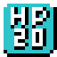 | 1.56% (4/256) | 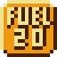 | 2.34% (6/256) |
| 0.39% (1/256) ★レア | 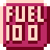 | 0.39% (1/256) ★レア | |
| 18.75% (48/256) | 18.75% (48/256) | ||
| 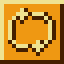 | 2.34% (6/256) | 9.38% (24/256) | |
| 2.34% (6/256) | 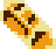 | 43.75% (112/256) |
モンスター図鑑
|
■ 金鉱クラゲ (Jellyfish) HP:20 / 接触ダメージ:3 / GOLD:100 / 初登場階:B1F 金鉱で金を舐めて生息するクラゲ。普段は何も考えず円状軌道で浮遊している。 |
|
| 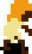 |
■ 金鉱夫ゾンビ (Zombie) HP:300 / 接触ダメージ:12 / GOLD:600 / 初登場階:B4F 謎のウイルスに感染して動き出した金鉱夫の死体。打たれ強く、接触ダメージが大きい。十字方向にヨロヨロしながら、ゆっくりエレナに近づいてくる。 |
|
■ 金鉱バット (Bat) HP:200 / 接触ダメージ:9 / 瘴気ダメージ:3 / GOLD:1100 / 初登場階:B7F 割と普通のコウモリ。不規則な軌道で浮遊し、一定時間毎にエレナを狙って瘴気を放つ。瘴気の速度は遅い。 |
|
| 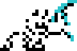 |
■ 金鉱夫スケルトン (Skeleton) HP:480 / 接触ダメージ:11 / 瘴気ダメージ:5 / GOLD:3100 / 初登場階:B10F 謎の魔法にかかって動き出した金鉱夫の白骨死体。下半身は失われている。手に持っているのは、つるはし。エレナに対し時計回りに回りこみつつ近づいてくる。一定時間毎にエレナを狙って瘴気を放つ。 |
| 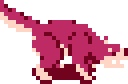 |
■ レッドウルフ (Red Wolf) HP:500 / 接触ダメージ:14 / GOLD:4300 / 初登場階:B13F 金鉱に生息するオオカミ。プレイヤーから「いぬ」呼ばわりされることが多い。加速しながらエレナに近づき、壁に当たると壁を蹴って跳ね返る。 |
| 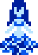 |
■ ウンディーネ (Undine) HP:550 / 接触ダメージ:17 / 瘴気ダメージ:7 / GOLD:6600 / 初登場階:B16F 女性体形をした水の精霊。水溜まりに隠れて移動し、不規則なタイミングで顔を出してはエレナを狙って瘴気を放つ。水溜まりに隠れている間は弾丸が当たらず、また、接触してもダメージを受けない。 |
| 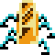 |
■ 黄金虫 (Gold Bug) HP:300 / 接触ダメージ:21 / GOLD:9900 / 初登場階:B19F 「こがねむし」ではなく「おうごんちゅう」と呼んでください。アイテムのGOLDに擬態しており、うっかりGOLDと間違えて回収しようとすると大ダメージを受ける。弾丸を当てるとエレナとは反対方向に高速で逃走する。本ゲーム中最大のGOLDを持つ。 |
| 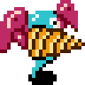 |
■ ドリルアーマードスライム (Drill Armored Slime) HP:1000 / 接触ダメージ:19 / 瘴気ダメージ:9 / GOLD:8100 / 初登場階:B22F 「スライムは最弱」という常識を打ち破るためドリルと肩アーマーを装備した意識高い系スライム。エレナに対し反時計回りに回りこみつつ遠ざかり、一定時間毎にエレナに向かって突進してくる。放つ瘴気の速度が速く、また、間隔が非常に短い。 |
製品仕様
マッパー
0 ( NROM互換 )
PRG ROM 容量
32 KB
CHR ROM 容量
8 KB
ミラーリング
水平
バッテリーバックアップ
なし
動作確認済環境
FCエミュレーター
- Mesen
- VirtuaNES
- Nestopia
FC互換機
- 8ビットポケット
- 16ビットポケットHDMI＋FC用拡張コンバーター
隠しコマンド
ゲームオーバーになった階から再スタート
タイトル画面で十字キーの右を押しながらスタートボタンを押す。
※画面が暗転するまでボタン押したまま。
ステータス MAX
タイトル画面で十字キーの上と、Ｂボタン、Ａボタンを同時に押しながらスタートボタンを押す。
※画面が暗転するまでボタン押したまま。
※十字キーの右斜め上を押すことで「ゲームオーバーになった階から再スタート」と併用可能。
※このコマンドを使うとGOLDの下2桁が"99"になる。
隠しコマンド３つめ
今後追記予定